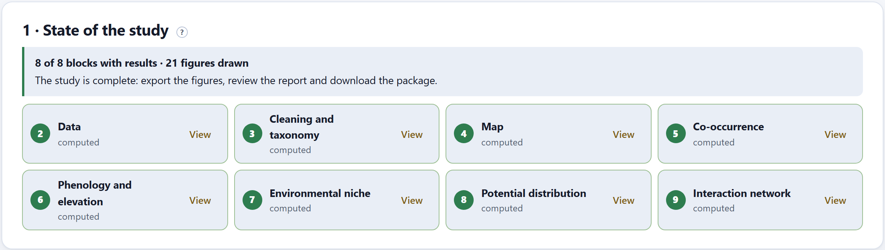
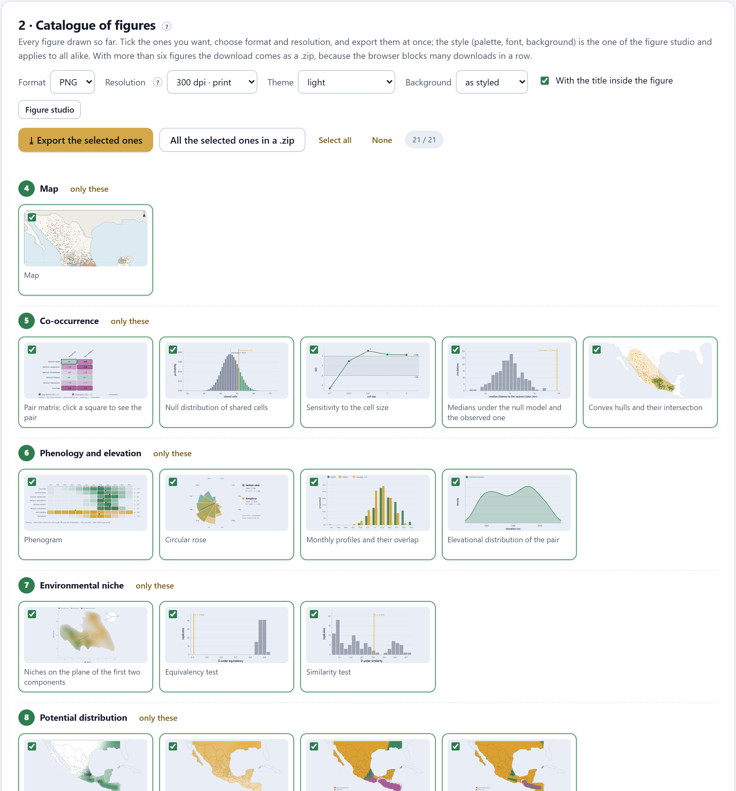
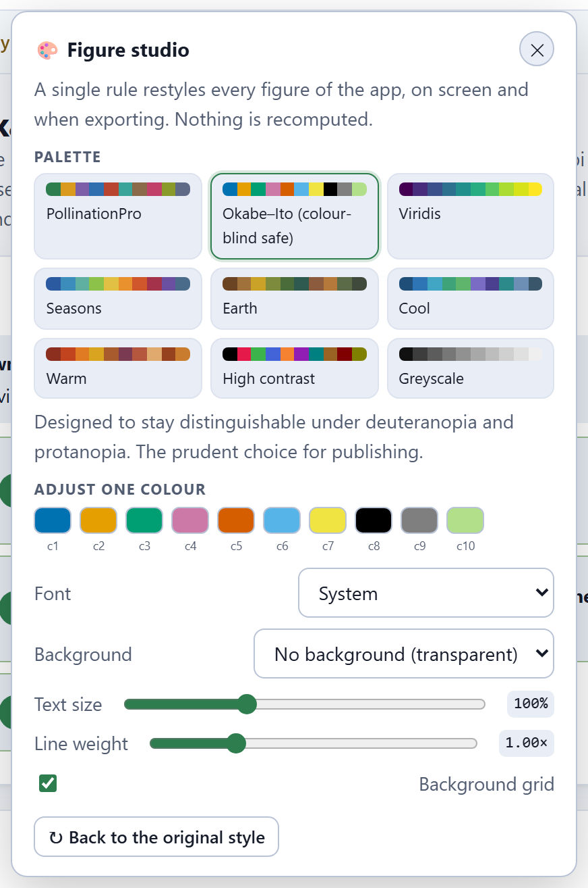
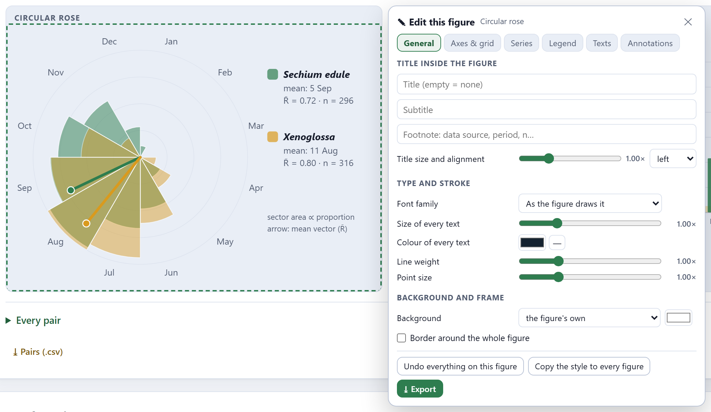
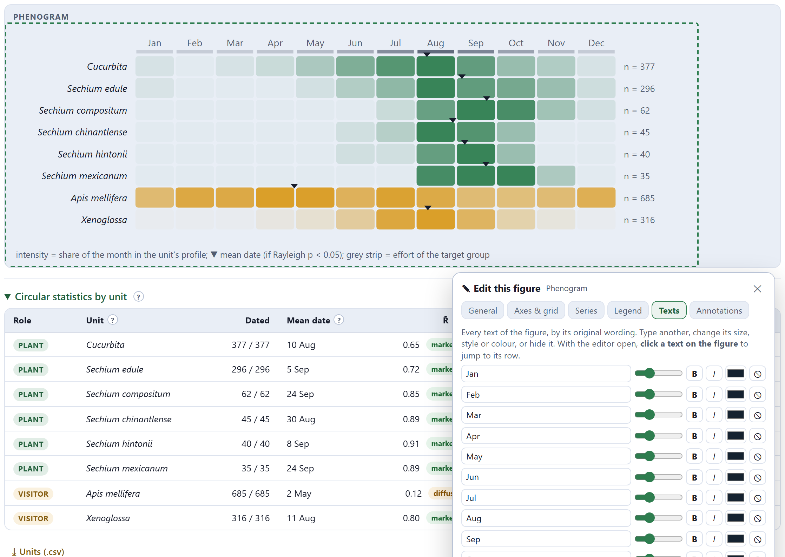
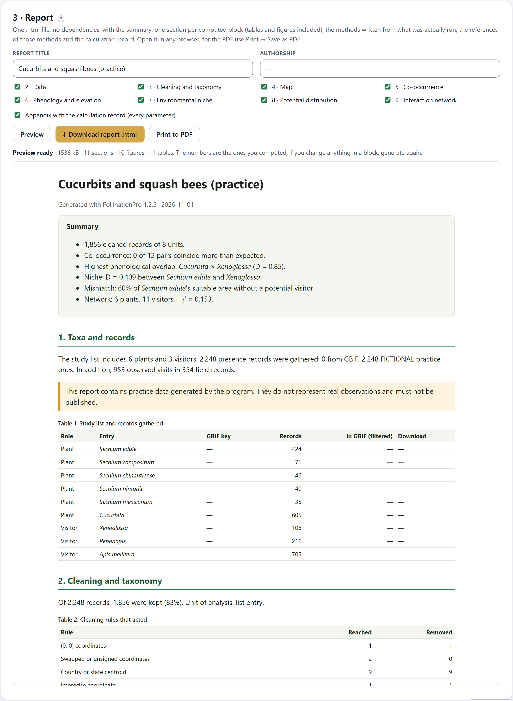
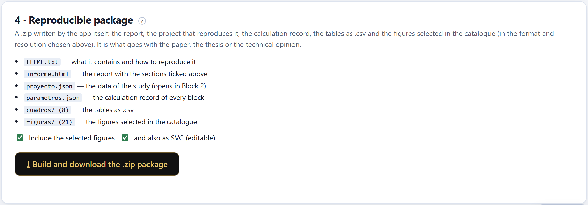

Everything you computed, ready to leave the app: every figure of the study in PNG, JPG or SVG up to 900 dpi in the style you choose —that of all of them at once from the figure studio, or that of each one with its ✎ editor—; a report that opens in any browser and prints to PDF, with the methods written from what you actually ran; and a .zip with the report, the figures, the tables and the project that reproduces it.
A study is delivered with three things: the figures, the text that says what was done and the data that allow it to be redone. Block 10 produces all three from whatever exists at that moment in the computed blocks. It recomputes nothing: if you change something in a block, come back here and generate again.

Each block appears as computed (with the View button) or not computed (with Go). A block is computed when you open it; the ones that were not opened do not appear in the report or in the catalog, and the message at the top reminds you of it. Blocks 7 and 8 also need layers, and Block 9, interactions.

| Control | What it does |
|---|---|
| Format | PNG, JPG or SVG (vector and editable). |
| Resolution | 150 dpi (screen), 300 (print), 600 (journal) or 900 (poster). |
| Theme · Background | Light, dark or the one on screen; background as styled, white, that of the card or transparent. |
| With the title inside the figure | Writes the title of the figure into the file. For a journal, which puts the title in the caption, untick it. |
| ⤓ Export the selected ones · All the selected ones in a .zip | Downloads the ticked ones; with more than six they come in a .zip, because the browser blocks many downloads in a row. |
There are two ways to change the look of the figures, and they combine.

It opens with the palette button of the top bar, from any block. A single rule restyles every figure of the app, on screen and when exporting, without recomputing anything.
Every figure of the app has, next to the ⤓ button, a ✎ button that opens its own editor. Whatever you change there applies only to that figure, is kept even if the figure is recomputed and comes out in its export, in the catalog, in the report and in the package. The editor has six tabs —General, Axes & grid, Series, Legend, Texts and Annotations—; the three you will use most are these.

| Tab | What is edited |
|---|---|
| General | The title inside the figure, with its subtitle, footnote, size and alignment; the font family, the size of every text (from 0.6 to 2.2 times), the color of every text, the line weight and the point size (from 0.3 to 3 times), the background and a border around the whole figure. The colors of the axes and the grid lines are on the Axes & grid tab. |
| Texts | Each text of the figure, by its original wording: it can be rewritten, resized, set in bold (B) or italic (I), recolored or hidden. It serves to translate a label, shorten a name or remove a label the journal does not want. |
| Series | Each color the figure uses, named after its legend entry, to replace it with another, change its weight, stroke or opacity, or hide the series. |

The editor remembers each text change by what the figure said. If you change the language of the app, the texts are different and are edited separately. And if a figure changes its content —another pair, another cell—, the texts that no longer exist are simply not applied.

The report is a single .html file, without dependencies, that opens in any browser. You give it a title and an authorship, tick the sections —one per computed block— and the appendix with the calculation record. Preview shows it in the card; ⤓ Download report .html saves it; Print to PDF opens the browser’s print dialog (Save as PDF).
| Part of the report | What it contains |
|---|---|
| Summary | One line per block: the cleaned records, the pairs that coincide more than expected, the largest phenological overlap, the D of the niche, the mismatch and the specialization of the network. |
| One section per block | What the block computed, in prose, with its tables and its figures (with the changes of the ✎ editor and the style of the figure studio). |
| Methods | Written from what was actually run: the cleaning rules with their parameters, the universe and the cell of the co-occurrence, the effort correction, the background and the density of the niche, the model and the threshold, the null model of the network. Only what was used appears. |
| References | Only the works of the methods used. |
| GBIF datasets | The datasets that contributed cleaned records, because GBIF asks for them to be credited, and the recommendation to repeat the download on its portal to obtain the DOI. |
| How to cite and appendix | The citation of the program and, if ticked, the calculation record with every parameter of every block. |
If the study uses the practice data, the report warns about it at the start; if the niche or the distribution were computed with the practice layers, their sections warn about it too. Such a report is for learning to read it, not for handing in.

| File | Content |
|---|---|
LEEME.txt | What the package contains and how to reproduce the study. |
informe.html | The report with the ticked sections. |
proyecto.json | The data of the study: it opens in Block 2 with 📂 Open a project. |
parametros.json | The calculation record of every block: rules, cells, universes, backgrounds, models, thresholds, replicates. |
cuadros/ | The tables as .csv: cleaned and removed records, co-occurrence pairs, phenological units and pairs, niche pairs, evaluation of the distribution, species of the network and GBIF datasets. |
figuras/ | The figures ticked in the catalog, in the chosen format and resolution, and also as SVG if and also as SVG (editable) is ticked. |
The .zip is written by the app itself, byte by byte, without any library. The file and folder names stay in Spanish whatever the language of the app. It is what goes with the paper, the thesis or the technical opinion: whoever receives it can open the project, read the parameters and redo every number (Sandve et al. 2013; Wilkinson et al. 2016).